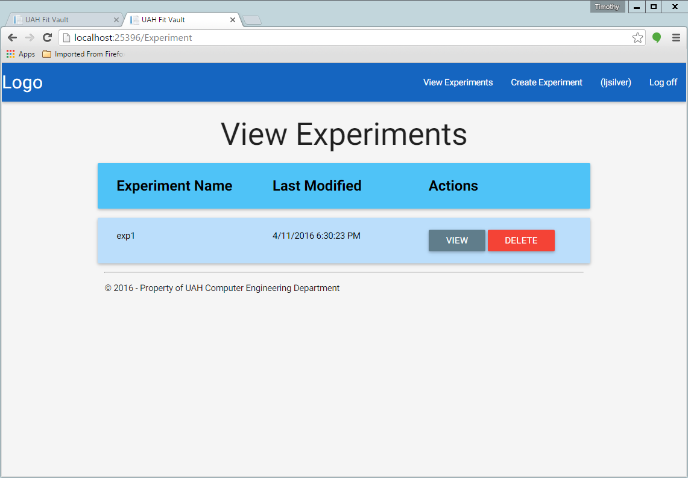

Experiment Deletion¶
Table of Contents
Only an Experiment Admin can delete experiments. To do this, simply login with your Experiment Admin credentials, and click on the “View Experiments” button at the top right corner of the page. This should take you to a page that looks like this:
You can then click on the “DELETE” button of the corresponding experiment you want to delete.